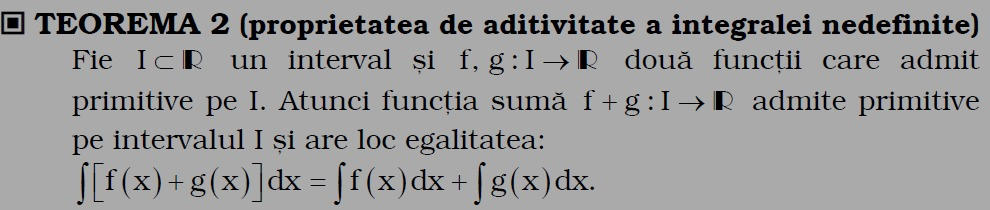
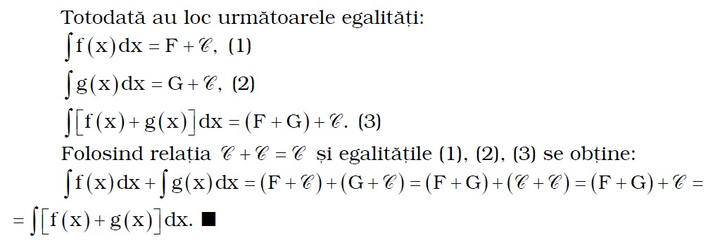
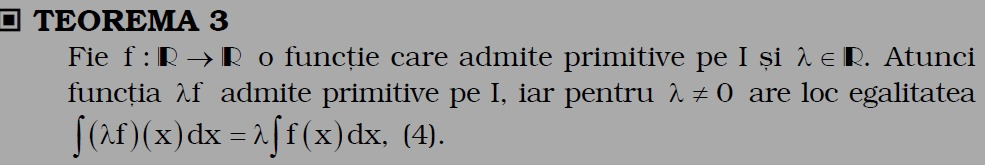
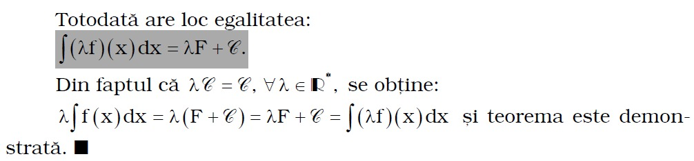
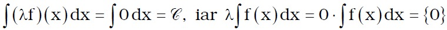
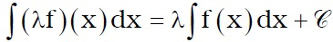
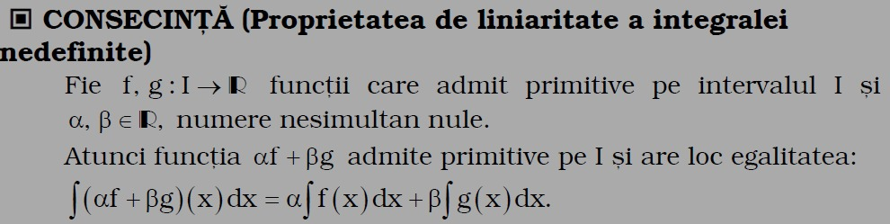
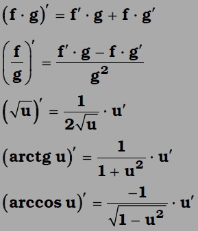

In acest capitol vom vorbi de proprietatile integralei nedefinite.
Astfel, vom vorbi, prima data, de proprietatea de aditivitate a integralei nedefinite:

DEFINITIE:
Fie F,G:I-->R primitive ale functiilor f,g pe intervalul I. Functiile F si G sunt derivabile pe I si F'=f si G'=g. Folosind operatiile cu functii derivabile pe un interval, rezulta ca functia F+G este functie derivabila pe I si are loc egalitatea (F+G)'=F'+G'=f+g.
Asadar, functia f+g admite primitive pe intervalul I si functia F+G este o primitiva a acesteia pe intervalul I.

Urmatoarea proprietate despre care o sa vorbim este intitulata Teorema 3.

DEMONSTRATIE:
Fie F o primitiva a functiei f pe intervalul I. Rezulta ca F este functie derivabilape I si F'=f. Conform operatiilor cu functii derivabile se obtine ca functia AF este derivabila pe I si (AF)'=AF'=Af. Asadar, functia Af admine primitive pe intervalul I si functia AF este o primitiva a ei.

OBSERVATII:
1) Pentru A=0, egalitatea (4) nu este adevarata. Intr-adevar, pentru A=0 avem: 
2) Pentru A care apartine lui R are loc egalitatea: 
Aceste observatii au o consecinta ce reprezinta totodata o alta proprietate a integralei nedefinite:

La tipurile de exercitii ce urmeaza tin sa reamintesc niste formule importante ce se vor folosi foarte des in diferite situatii. Formulele tin de derivare.

Orice functie continua f:I-->R admite primitive pe intervalul I.
Totodata exista si o alta proprietate care spune ca: Orice functie f:I-->R are discontinuitati de speta I nu admite primitive pe intervalul I.
Mai general, daca o functie f:I-->R nu are proprietatea lui Darboux pe intervalul I, atunci nu are primitive pe I.